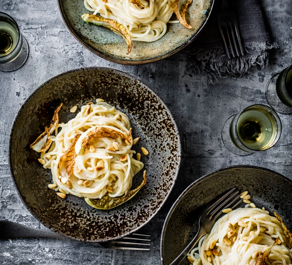

Spaghetti Pasta Recipe aka Vegan varbonara

Description
ROOT-TO-LEAF TREND
Also known as root-to-fruit, this trend has seen chefs such as Tom Hunt of Bristol’s Poco
and Douglas McMaster of Brighton’s Silo adopt a zero-waste policy. One way to easily
achieve this is using the whole vegetable in the creation of a dish, so nothing
is destined for the bin. Cauliflower lends itself to this treatment really well as
the leaves crisp up beautifully once roasted.
Ingredients
- 1 small caulflower, leaves trimmed off and reserved
- 3 tbsp olive oil
- 750mk vegetable stock
- 2 cloves garlic, peeled
- white pepper
- 450g spaghetti
- 4 tbsp pine nuts, toasted
Methods
Step 1
Heat the oven to 200C/fan 180C/gas 6. Toss the cauli leaves with 1
tbsp of olive oil, season and spread on a non-stick baking tray. Roast
for 10-12 minutes or until the leaf stems are tender and the leaves are a
little crispy at the edges.
Step 2
Break the cauliflower into florets and cut the stalk into small pieces, then put in a pan with the stock,
garlic and 2 tbsp of olive oil. Bring to a simmer,
cover and cook for 15-20 minutes or until the cauli and garlic are very soft.
Step 3
Scoop out the cauli and garlic into a blender and blitz, adding enough cooking liquid to give a sauce the
texture of double cream. Pour back into the pan and season really well with salt and white pepper.
Step 4
Cook the pasta following pack instructions. Drain then toss with the cauli sauce.
Serve sprinkled with the cauli leaves and pine nuts.